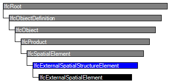

Natural language names
 | Externe Raumstruktur |
 | External Spatial Structure Element |
 | Elément de la structure spatiale extérieure |
| Externe Raumstruktur |
| External Spatial Structure Element |
| Elément de la structure spatiale extérieure |
| Item | SPF | XML | Change | Description | IFC2x3 to IFC4 |
|---|---|---|---|---|
| IfcExternalSpatialStructureElement | ADDED |
The external spatial structure element is an abstract entity provided for different kind of external spaces, regions, and volumes.
HISTORY New entity in IFC4.

| # | Attribute | Type | Cardinality | Description | C |
|---|---|---|---|---|---|
| IfcRoot | |||||
| 1 | GlobalId | IfcGloballyUniqueId | [1:1] | Assignment of a globally unique identifier within the entire software world. | X |
| 2 | OwnerHistory | IfcOwnerHistory | [0:1] |
Assignment of the information about the current ownership of that object, including owning actor, application, local identification and information captured about the recent changes of the object,
NOTE only the last modification in stored - either as addition, deletion or modification. | X |
| 3 | Name | IfcLabel | [0:1] | Optional name for use by the participating software systems or users. For some subtypes of IfcRoot the insertion of the Name attribute may be required. This would be enforced by a where rule. | X |
| 4 | Description | IfcText | [0:1] | Optional description, provided for exchanging informative comments. | X |
| IfcObjectDefinition | |||||
| HasAssignments | IfcRelAssigns @RelatedObjects | S[0:?] | Reference to the relationship objects, that assign (by an association relationship) other subtypes of IfcObject to this object instance. Examples are the association to products, processes, controls, resources or groups. | X | |
| Nests | IfcRelNests @RelatedObjects | S[0:1] | References to the decomposition relationship being a nesting. It determines that this object definition is a part within an ordered whole/part decomposition relationship. An object occurrence or type can only be part of a single decomposition (to allow hierarchical strutures only). | X | |
| IsNestedBy | IfcRelNests @RelatingObject | S[0:?] | References to the decomposition relationship being a nesting. It determines that this object definition is the whole within an ordered whole/part decomposition relationship. An object or object type can be nested by several other objects (occurrences or types). | X | |
| HasContext | IfcRelDeclares @RelatedDefinitions | S[0:1] | References to the context providing context information such as project unit or representation context. It should only be asserted for the uppermost non-spatial object. | X | |
| IsDecomposedBy | IfcRelAggregates @RelatingObject | S[0:?] | References to the decomposition relationship being an aggregation. It determines that this object definition is whole within an unordered whole/part decomposition relationship. An object definitions can be aggregated by several other objects (occurrences or parts). | X | |
| Decomposes | IfcRelAggregates @RelatedObjects | S[0:1] | References to the decomposition relationship being an aggregation. It determines that this object definition is a part within an unordered whole/part decomposition relationship. An object definitions can only be part of a single decomposition (to allow hierarchical strutures only). | X | |
| HasAssociations | IfcRelAssociates @RelatedObjects | S[0:?] | Reference to the relationship objects, that associates external references or other resource definitions to the object.. Examples are the association to library, documentation or classification. | X | |
| IfcObject | |||||
| 5 | ObjectType | IfcLabel | [0:1] |
The type denotes a particular type that indicates the object further. The use has to be established at the level of instantiable subtypes. In particular it holds the user defined type, if the enumeration of the attribute PredefinedType is set to USERDEFINED.
| X |
| IsDeclaredBy | IfcRelDefinesByObject @RelatedObjects | S[0:1] | Link to the relationship object pointing to the declaring object that provides the object definitions for this object occurrence. The declaring object has to be part of an object type decomposition. The associated IfcObject, or its subtypes, contains the specific information (as part of a type, or style, definition), that is common to all reflected instances of the declaring IfcObject, or its subtypes. | X | |
| Declares | IfcRelDefinesByObject @RelatingObject | S[0:?] | Link to the relationship object pointing to the reflected object(s) that receives the object definitions. The reflected object has to be part of an object occurrence decomposition. The associated IfcObject, or its subtypes, provides the specific information (as part of a type, or style, definition), that is common to all reflected instances of the declaring IfcObject, or its subtypes. | X | |
| IsTypedBy | IfcRelDefinesByType @RelatedObjects | S[0:1] | Set of relationships to the object type that provides the type definitions for this object occurrence. The then associated IfcTypeObject, or its subtypes, contains the specific information (or type, or style), that is common to all instances of IfcObject, or its subtypes, referring to the same type. | X | |
| IsDefinedBy | IfcRelDefinesByProperties @RelatedObjects | S[0:?] | Set of relationships to property set definitions attached to this object. Those statically or dynamically defined properties contain alphanumeric information content that further defines the object. | X | |
| IfcProduct | |||||
| 6 | ObjectPlacement | IfcObjectPlacement | [0:1] | Placement of the product in space, the placement can either be absolute (relative to the world coordinate system), relative (relative to the object placement of another product), or constraint (e.g. relative to grid axes). It is determined by the various subtypes of IfcObjectPlacement, which includes the axis placement information to determine the transformation for the object coordinate system. | X |
| 7 | Representation | IfcProductRepresentation | [0:1] | Reference to the representations of the product, being either a representation (IfcProductRepresentation) or as a special case a shape representations (IfcProductDefinitionShape). The product definition shape provides for multiple geometric representations of the shape property of the object within the same object coordinate system, defined by the object placement. | X |
| ReferencedBy | IfcRelAssignsToProduct @RelatingProduct | S[0:?] | Reference to the IfcRelAssignsToProduct relationship, by which other products, processes, controls, resources or actors (as subtypes of IfcObjectDefinition) can be related to this product. | X | |
| IfcSpatialElement | |||||
| 8 | LongName | IfcLabel | [0:1] |
Long name for a spatial structure element, used for informal purposes. It should be used, if available, in conjunction with the inherited Name attribute.
NOTE In many scenarios the Name attribute refers to the short name or number of a spacial element, and the LongName refers to the full descriptive name. | X |
| ContainsElements | IfcRelContainedInSpatialStructure @RelatingStructure | S[0:?] | Set of spatial containment relationships, that holds those elements, which are contained within this element of the project spatial structure.
NOTE The spatial containment relationship, established by IfcRelContainedInSpatialStructure, is required to be an hierarchical relationship, where each element can only be assigned to 0 or 1 spatial structure element. | X | |
| ServicedBySystems | IfcRelServicesBuildings @RelatedBuildings | S[0:?] | Set of relationships to systems, that provides a certain service to the spatial element for which it is defined. The relationship is handled by the objectified relationship IfcRelServicesBuildings. | X | |
| ReferencesElements | IfcRelReferencedInSpatialStructure @RelatingStructure | S[0:?] | Set of spatial reference relationships, that holds those elements, which are referenced, but not contained, within this element of the project spatial structure.
NOTE The spatial reference relationship, established by IfcRelReferencedInSpatialStructure, is not required to be an hierarchical relationship, i.e. each element can be assigned to 0, 1 or many spatial structure elements. EXAMPLE A curtain wall maybe contained in the ground floor, but maybe referenced in all floors, it reaches. Ø\X | X | |
| IfcExternalSpatialStructureElement | |||||
| # | Concept | Model View |
|---|---|---|
| IfcRoot | ||
| Software Identity | Common Use Definitions | |
| Revision Control | Common Use Definitions | |
| IfcObject | ||
| Object Occurrence Predefined Type | Common Use Definitions | |
| IfcSpatialElement | ||
| Property Sets for Objects | Common Use Definitions | |
| FootPrint GeomSet Geometry | Common Use Definitions | |
<xs:element name="IfcExternalSpatialStructureElement" type="ifc:IfcExternalSpatialStructureElement" abstract="true" substitutionGroup="ifc:IfcSpatialElement" nillable="true"/>
<xs:complexType name="IfcExternalSpatialStructureElement" abstract="true">
<xs:complexContent>
<xs:extension base="ifc:IfcSpatialElement"/>
</xs:complexContent>
</xs:complexType>
ENTITY IfcExternalSpatialStructureElement
ABSTRACT SUPERTYPE OF(IfcExternalSpatialElement)
SUBTYPE OF (IfcSpatialElement);
END_ENTITY;
 EXPRESS-G diagram
EXPRESS-G diagram Link to this page
Link to this page